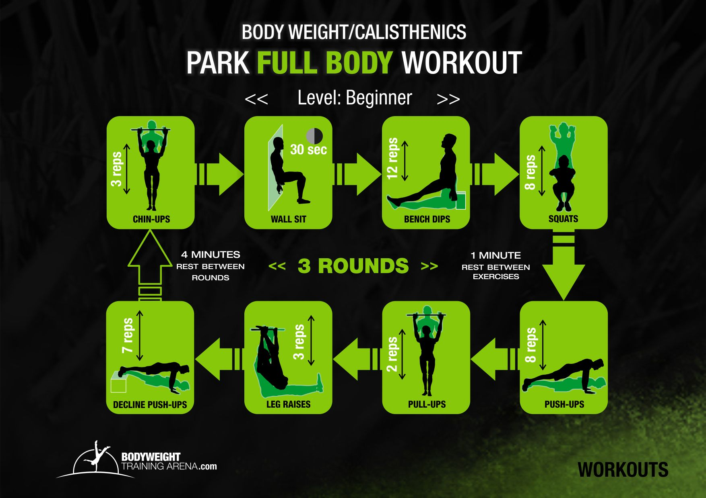
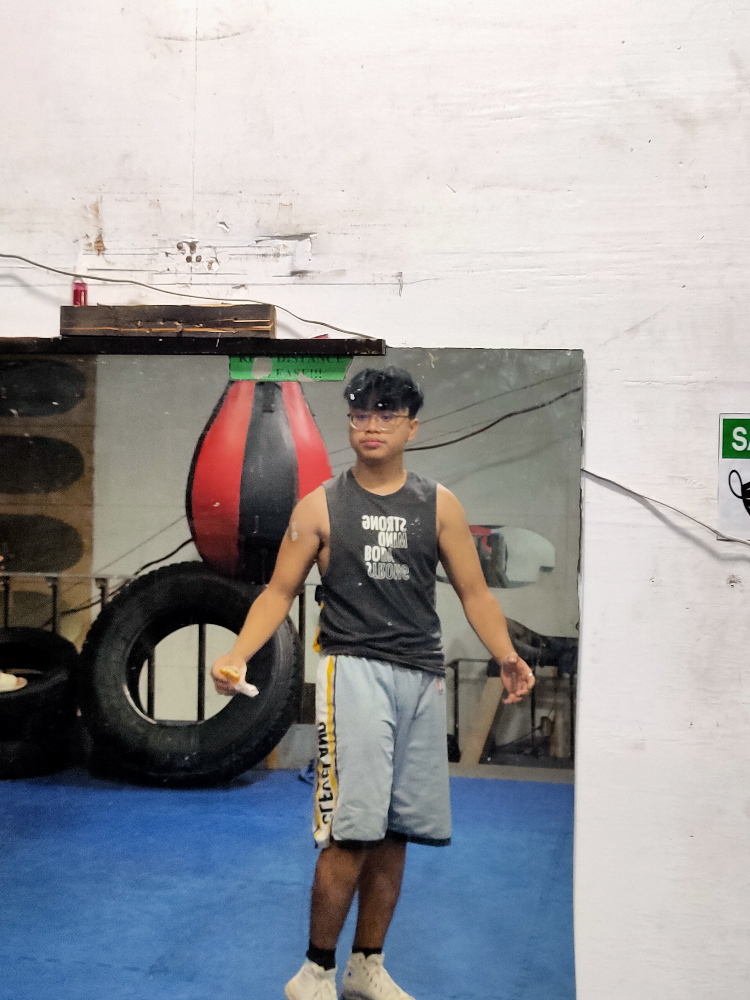
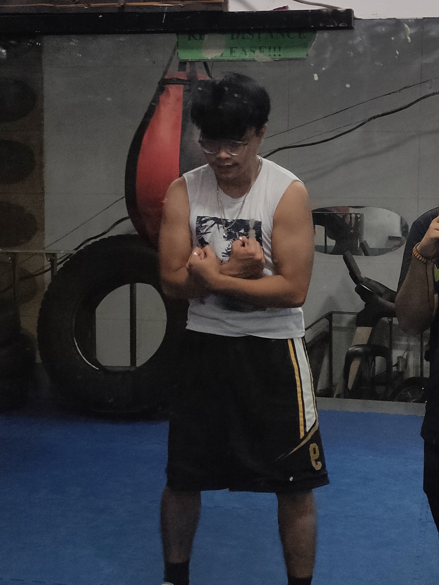
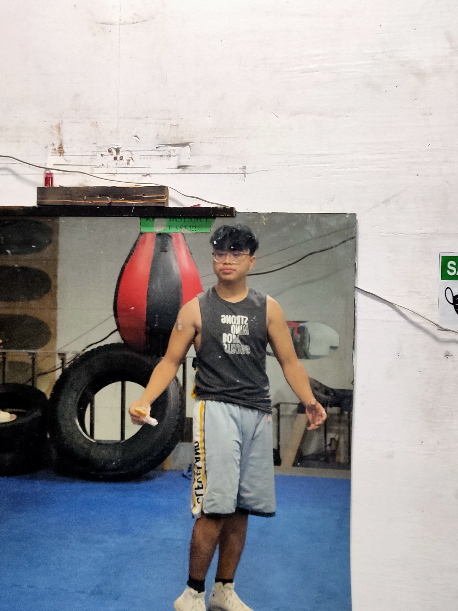
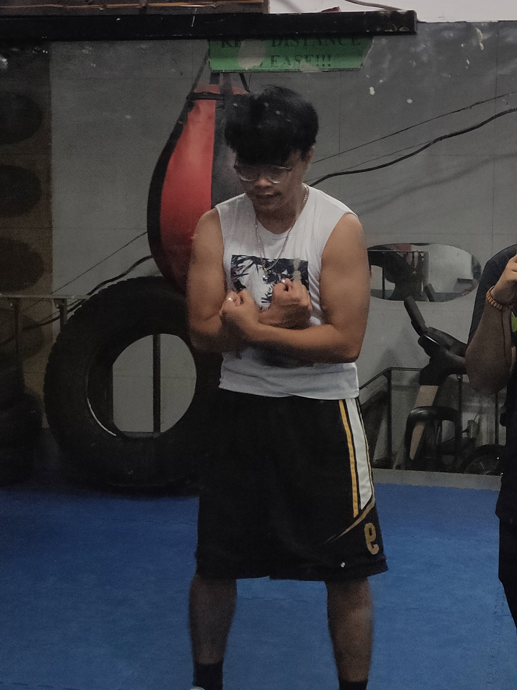
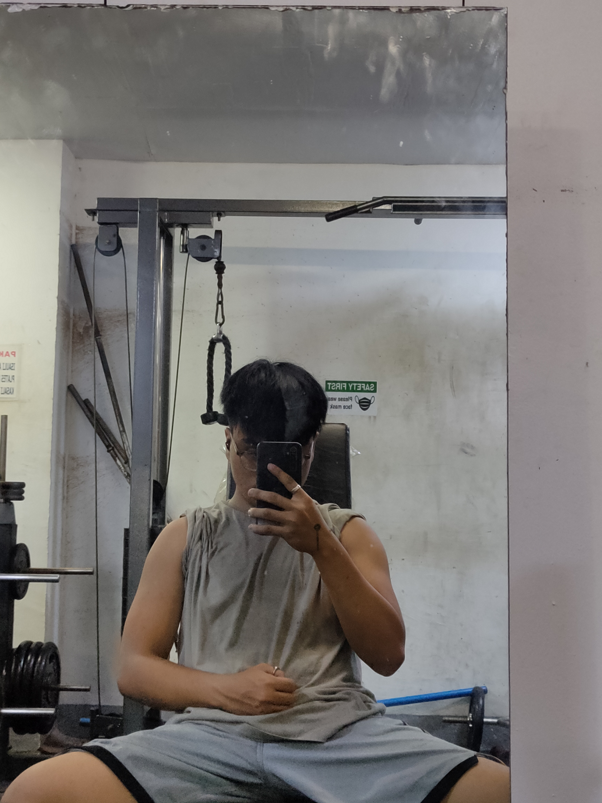
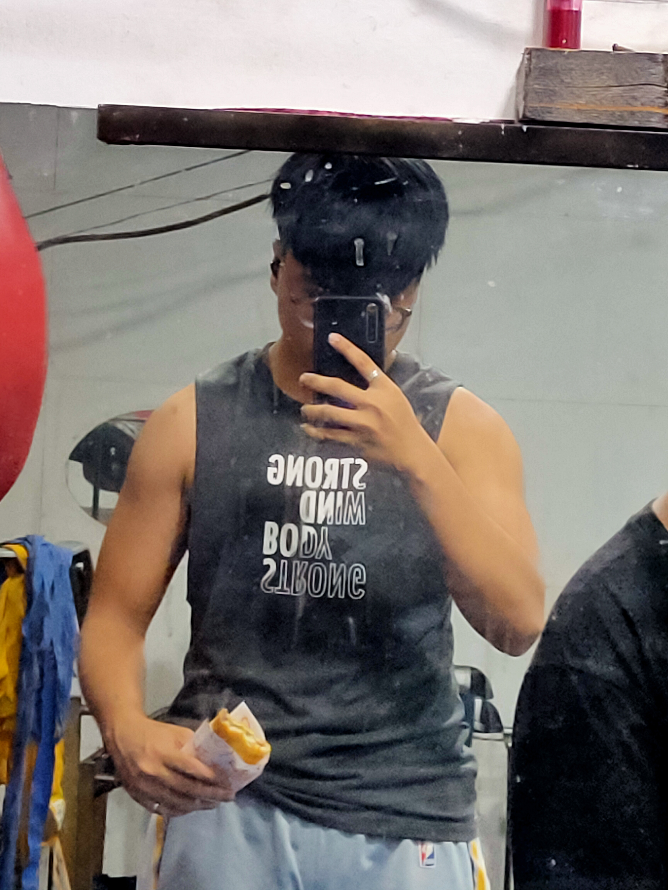
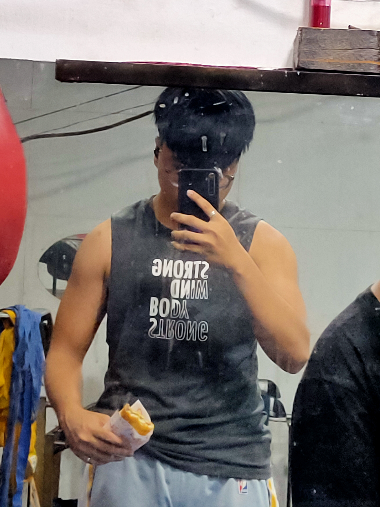
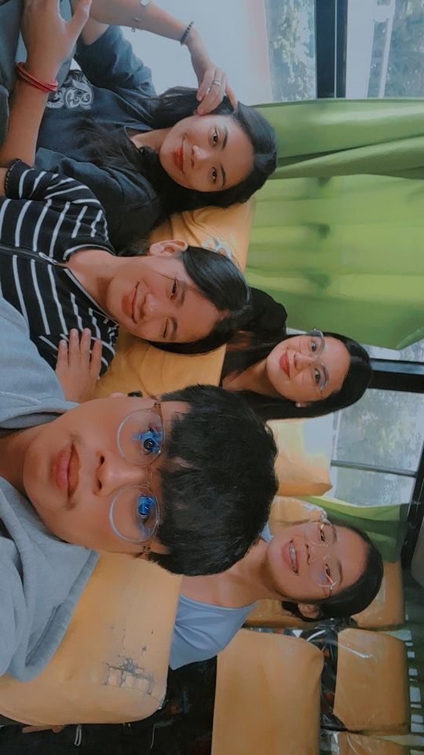
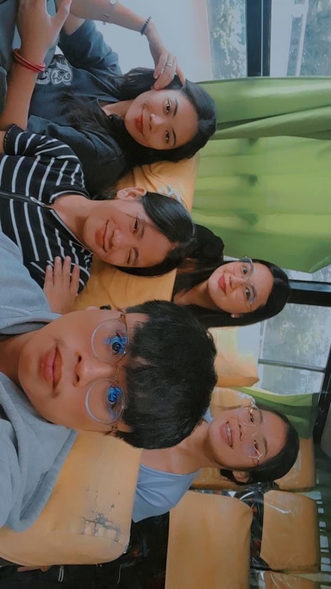

Danilo L. Quilaquil Jr.
College Student, Gym Builder etc.
Short Idea About Me.
HI!!! I am Danilo Labuca Quilaquil Jr. I am 20 yrsold, i lived at 2132 breton rd, p. burgos pasay city. My birthday is September 15, 2001.
I am currently 3rd year College BS-IT ( Bachelor of Science in Information Techonology ) at Arellano University in Pasay City...
My Zodiac sign is Virgo, As a Virgo born on September 15th, you possess an elegant and dutiful personality.
You always seem to be aware of what is going on around you and don't let things surprise you.
Making a reliable friend, you are always on call for those you care about.
You are also quite creative and later in life you might discover some unexpected passions.
September 15 Zodiac people are very attached to the other two earth signs: Taurus and Capricorn as they tend to share the same vision of life.
In life, Virgo is in a constant search for a project lover they can support and help develop and the most suitable to give them this occasion is the native in Pisces.
The lover in Virgo is thought to be least compatible with Leo.
As for the rest of compatibilities between the other star signs and Virgo, you know what they say, stars predispose but people dispose.
i love playing basketball with friends or with the family, sometimes i play volleyball, Bonding with friends and family's,
My Interest

Basketball
It is my favorite sport because basketball has always been a safe place for me being a hooper.
It's where I meet my best friends, it's where I stay away of trouble. It's where I have the most fun.
Let out my emotions, It's where I can be the best version of myself.

Calisthenics/HomeWorkout
Calisthenics (American English) or callisthenics (British English) is a form of strength training consisting of a variety of movements that exercise large muscle groups (gross motor movements),
such as standing, grasping, pushing, etc. These exercises are often performed rhythmically and with minimal equipment, as bodyweight exercises.

Watching Anime
I also want to watch anime because it's also one of my favorites. This is also of the reasons why I started workout.
Because I want to imitate a body physique of Son Goku, A anime character that has a strong and stunning body physique.
Even though it seems difficult, I can see the results of my body workout.
My Albumn
 




 

 

Contact Me
Pasay City, Manila.
Phone: +639299725604 / +639213820647
Email: quilaquiljrdanilolabuca@mail.com
If you want to get intouch. Send me a email: